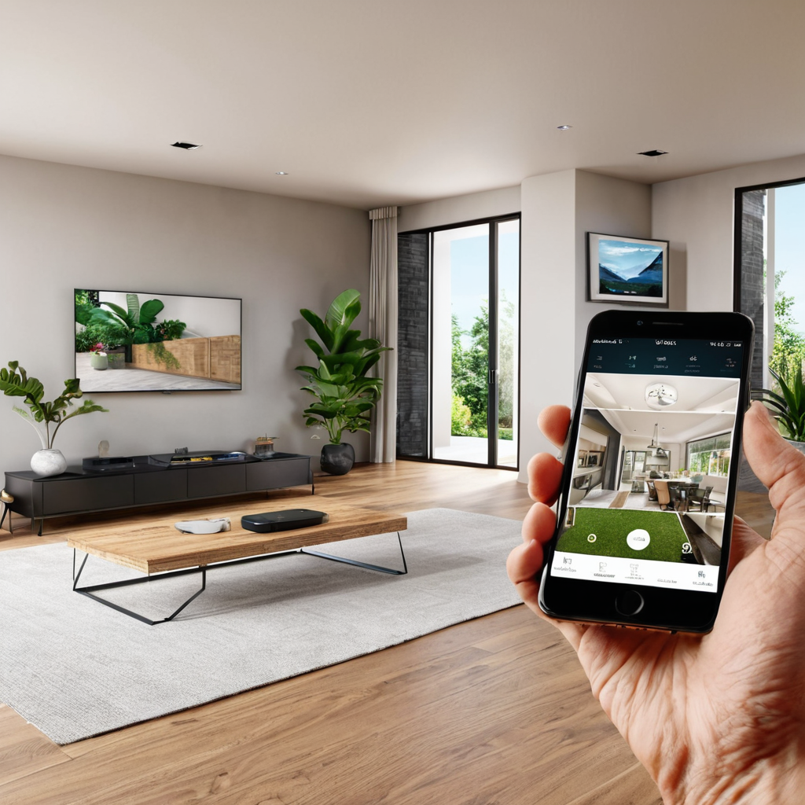
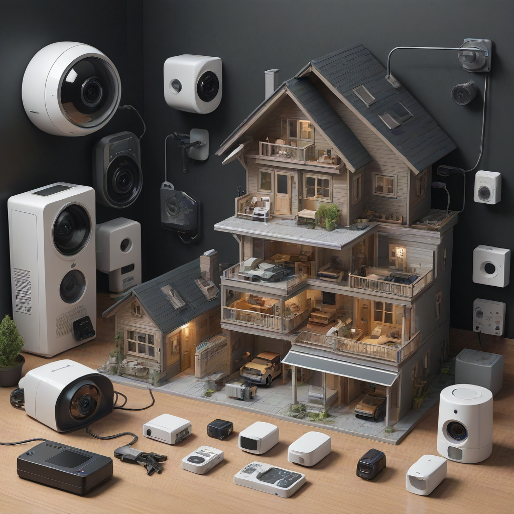
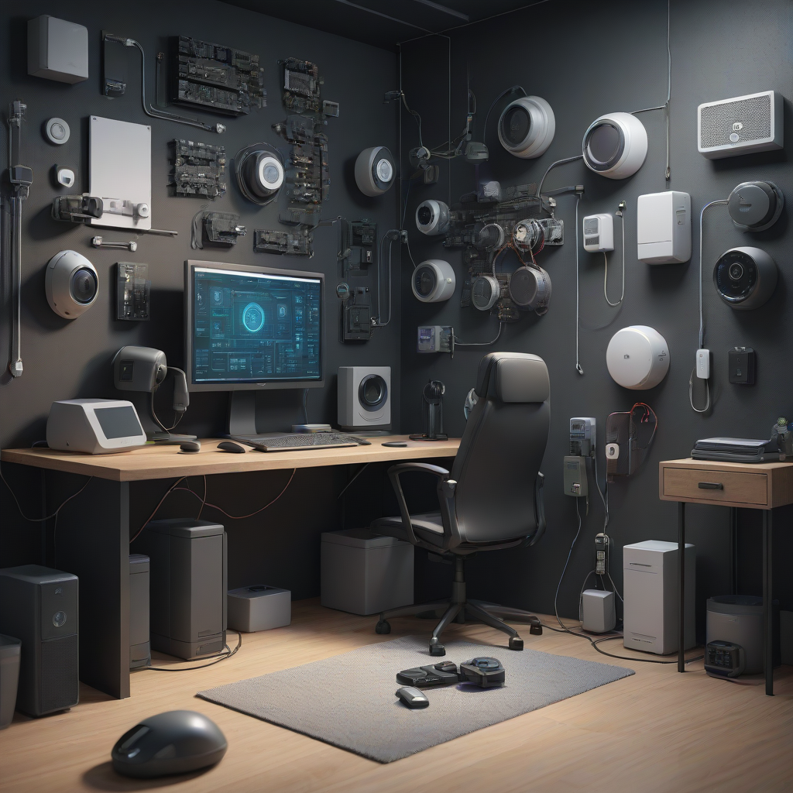

Top Pick: For most homeowners, SimpliSafe remains the overall best DIY home security system for 2026 due to its reliable cellular backup and flexible monitoring options. Ring Alarm Pro is the best choice for users already invested in the Amazon ecosystem, while abode wins for advanced smart home automation without monthly fees.
Protecting your home and family is one of the most critical responsibilities of homeownership, yet the landscape of security has shifted dramatically over the last decade. Gone are the days when securing a property meant signing a long-term lease with a national monitoring company. Today, the market is flooded with sophisticated wireless home alarm systems that empower users to take control of their safety without the hassle of professional installation. Whether you are a homeowner looking to increase property value or a renter seeking a renter friendly security system, understanding the options available in 2026 is essential for making an informed decision.
Choosing the right security infrastructure is not just about deterrence; it is about peace of mind and practical risk management. Modern systems integrate seamlessly with smart home devices, offering real-time alerts, video verification, and remote access via mobile apps. However, with so many brands promising no contract security systems and affordable home monitoring, it can be overwhelming to distinguish between marketing hype and genuine protection. This guide cuts through the noise to provide an expert analysis of the top contenders, focusing on reliability, cost, and ease of use.
In this comprehensive review, we evaluate the best DIY home security systems 2026 based on rigorous testing criteria. We look at connectivity options, sensor quality, app functionality, and pricing transparency. Our goal is to help you build a DIY smart home security setup that fits your specific budget and living situation, ensuring that you are protected without breaking the bank. Let’s dive into the systems that define the industry standard this year.
Why DIY Security Matters in 2026

The shift toward DIY installation is driven by three main factors: cost, flexibility, and technology. Traditional alarm systems often require expensive upfront fees and binding contracts that can last for years. In contrast, modern DIY solutions allow you to purchase the hardware outright and choose monitoring services on a month-to-month basis. This flexibility is particularly appealing to renters who may move frequently or homeowners who want to customize their setup without waiting for a technician.
Furthermore, the technology behind these systems has matured significantly. Cellular backup, which was once a premium add-on, is now standard in many base stations, ensuring your alarm remains active even if your internet goes down. Smart integrations allow lights to turn on when an alarm is triggered or cameras to record when a motion sensor detects activity. This interconnected approach creates a robust security net that is far superior to the standalone alarms of the past.
When evaluating these systems, we prioritize reliability above all else. A system that is cheap but prone to false alarms or connectivity drops is useless in a real emergency. We also consider the ease of installation. If you cannot set up the system within an hour, it may not be the

Top 5: Best DIY Home Security Systems (2026)
1. SimpliSafe – Best Overall System
SimpliSafe has consistently held the top spot for a reason: reliability. In 2026, their updated base station features improved cellular backup and a sleeker design. What sets SimpliSafe apart is their commitment to no-contract policies. You can buy the system and use it as a local alarm, or add professional monitoring for a flat monthly rate with no lock-in.
The system includes a wide array of sensors, including door/window contacts, motion detectors, and glass break sensors. The key fob is a standout feature, allowing you to arm and disarm the system easily, even if your phone battery dies. SimpliSafe also integrates well with video doorbells and cameras, though their camera ecosystem is still playing catch-up to competitors like Ring.
Pros:
- Excellent cellular backup included in most base stations.
- No long-term contracts required for monitoring.
- Highly reliable sensors with long battery life.
- Responsive customer support.
Cons:
- Professional monitoring is required for video verification features.
- Smart home integrations are limited compared to Z-Wave systems.
Pricing: Starter kits start around $249. Professional monitoring ranges from $15 to $35 per month.
2. Ring Alarm Pro – Best for Amazon Ecosystem
If you already own a Ring doorbell or Echo devices, the Ring Alarm Pro is the logical choice for your DIY smart home security setup. The Pro base station is unique because it includes a built-in Eero Wi-Fi 6 router, which extends your network coverage while acting as the alarm hub. This dual functionality makes it incredibly valuable for tech-savvy users.
The system excels in video integration. If you have Ring cameras, they work seamlessly with the alarm to provide live view verification. This means when a sensor is tripped, you and the monitoring center can see video footage to confirm whether it is a real threat. This reduces false dispatches, which can save you money on police response fees in some jurisdictions.
Pros:
- Built-in Eero Wi-Fi 6 router extends network range.
- Deep integration with Alexa and Ring cameras.
- Two-way talk on base station for emergency communication.
- Expandable with a wide range of Ring accessories.
Cons:
- Requires a paid subscription for most smart features and video storage.
- Hardware is more expensive upfront than competitors.
Pricing: Base kit starts around $249. Ring Protect Pro subscription is required for advanced features ($20/month).
3. abode – Best for Smart Home Automation
For users who want their security system to control their lights, locks, and thermostats, abode is the industry leader in wireless home alarm systems. Unlike SimpliSafe or Ring, abode supports Z-Wave and Zigbee protocols, allowing it to communicate with thousands of third-party smart devices. This makes it the ultimate choice for home automation enthusiasts.
abode offers a unique pricing model where professional monitoring is not required to unlock advanced features. You can use the system entirely locally if you prefer, giving you total control over your data privacy. The app is one of the best in the industry, offering detailed activity logs and custom automation rules. However, the hardware can be pricier, and the setup requires a bit more technical know-how than a plug-and-play system.
Pros:
- Supports Z-Wave and Zigbee for extensive smart home integration.
- No contract for professional monitoring.
- Local control options available without cloud dependency.
- Highly customizable automation rules.
Cons:
- Higher upfront cost for hardware.
- Steeper learning curve for automation setups.
Pricing: Kits start around $300. Monitoring plans range from $10 to $30 per month.
4. Curt – Best Budget Option
Budget-conscious consumers often find themselves priced out of security systems, but Curt has disrupted the market with an entirely free monitoring model. Curt’s system relies on a peer-to-peer monitoring network rather than a traditional call center. When an alarm triggers, the system alerts other users in the network to check the feed or contact the homeowner. This is a revolutionary approach to affordable home monitoring that eliminates monthly fees.
The hardware is simple and straightforward, including a base station, sensors, and a camera. While it lacks the high-end features of abode or Ring, it gets the job done for basic entry protection. The app is clean and easy to use. However, it is important to note that the peer-to-peer model relies on community participation, which may vary in reliability depending on your region.
Pros:
- No monthly fees for monitoring or cloud storage.
- Very affordable hardware costs.
- Simple, user-friendly app interface.
- Great entry-level option for first-time buyers.
Cons:
- Community monitoring is not as reliable as professional services.
- Video quality is lower than premium competitors.
Pricing: Starter kit around $150. Free monitoring available.
5. Arlo Secure – Best Video Focused System
Arlo is primarily known for its cameras, but their Arlo Secure system offers a complete alarm package with a heavy focus on video verification. In 2026, Arlo has integrated AI detection capabilities that can distinguish between people, packages, and animals. This reduces false alarms significantly, making it a great choice for homes near busy streets.
The system is entirely wireless, meaning the base station doesn't need to be near a power outlet if you use battery-powered hubs. This makes it an excellent renter friendly security system as there are no wires to hide. The video quality is industry-leading, often offering 2K resolution or higher. However, to unlock the full potential of the smart detection features, a subscription is mandatory.
Pros:
- Superior video quality and AI detection.
- Fully wireless design ideal for rentals.
- Long battery life on sensors and cameras.
- Weather-resistant outdoor cameras.
Cons:
- Subscription required for AI features and video storage.
- Hardware is expensive compared to other kits.
Pricing: Starter kits start around $350. Subscription plans start at $6.99 per month.
Comparison Table: Best DIY Systems 2026
| System | Best For | Upfront Cost | Monitoring | Smart Home Integration | Contract |
|---|---|---|---|---|---|
| SimpliSafe | Overall Reliability | $$ | Optional (15-35/mo) | Basic | No |
| Ring Alarm Pro | Amazon Users | $$$ | Optional (20/mo) | High (Alexa) | No |
| abode | Smart Automation | $$$ | Optional (10-30/mo) | Very High (Z-Wave) | No |
| Curt | Budget Buyers | $ | Free (Peer-to-Peer) | Basic | No |
| Arlo Secure | Video Protection | $$$$ | Required for AI | Medium | No |
Buying Guide: How to Choose the Right System
Selecting the best system for your needs requires looking beyond the marketing materials. You must consider your specific living environment and security goals. Below are the critical factors you should evaluate before purchasing.
Connectivity and Backup
Reliability is paramount. A system that depends solely on Wi-Fi is vulnerable to internet outages. Always choose a system that offers cellular backup, either built into the base station or via an add-on module. This ensures that if your internet is cut during a break-in, the alarm can still communicate with the monitoring center. Check if the system uses Wi-Fi 6 or 5GHz bands for better stability in crowded neighborhoods.
Monitoring Options
Do you need professional monitoring? If you are often traveling or work long hours, professional monitoring is a safety net. However, if you are home frequently and want to save money, self-monitoring with mobile alerts is a viable option. Look for no contract security systems that allow you to upgrade or downgrade your monitoring plan without penalty. This flexibility is crucial as your needs change over time.
Smart Home Compatibility
Consider how the system fits into your existing tech stack. If you use Google Home, Alexa, or Apple HomeKit, ensure the system integrates with your preferred platform. Systems like abode offer open protocols like Z-Wave, which allow you to control smart locks and lights alongside your alarm. This interoperability allows you to create automations, such as turning on porch lights when the alarm is armed, which acts as a strong deterrent.
Installation and Sensors
Most DIY systems are advertised as "tool-free," but check the adhesive quality. Weak adhesive means sensors may fall off during extreme temperatures. Ensure the kit comes with enough sensors to cover all entry points. If you need more, check the cost of additional sensors. Some companies charge a premium for extra sensors, which can add up quickly. Also, verify the battery life of the sensors; replacing them every six months is a hassle.
Warranty and Support
Even the best systems can fail. Check the warranty period on the hardware. SimpliSafe and Ring typically offer one-year warranties, but some competitors offer longer. Additionally, test the support channels. Can you reach a human easily? Is there a comprehensive knowledge base? Good support is essential when troubleshooting connection issues or false alarms.
Frequently Asked Questions
Are DIY systems effective for renters?
Yes, absolutely. Renter friendly security systems like Arlo and SimpliSafe are designed with adhesive mounting and wireless connectivity, meaning you do not need to drill holes or run wires. This protects your security deposit while ensuring your safety. Just be sure to check your lease agreement regarding any modifications, though most modern wireless sensors are non-invasive.
Do I need professional monitoring to be safe?
Not necessarily. Self-monitoring allows you to receive instant alerts on your phone and take action yourself or call the police. However, professional monitoring provides a layer of safety if you are asleep or away from your phone when an alarm triggers. For maximum peace of mind, a hybrid approach using a system like Ring or abode that allows both is recommended.
What happens if the power goes out?
Most modern base stations have built-in rechargeable batteries that last for hours during a power outage. Additionally, cellular backup ensures the system remains connected to the monitoring center even if your internet is down. Always check the battery backup duration in the product specifications to ensure it meets your local area's power reliability standards.
Can I add cameras later if I only buy sensors now?
Yes, most DIY systems are modular. You can start with a basic kit containing door and motion sensors and add cameras later as your budget allows. This is a great strategy for managing costs. However, ensure the cameras are compatible with the specific brand's ecosystem to avoid integration issues.
How do I test my system without alerting authorities?
Before activating professional monitoring, put the system in "Test Mode" or "Vacation Mode" if available. This triggers the alarms internally but does not notify the monitoring center or police. Check our alarm testing guide for detailed steps on how to verify your sensors and siren functionality safely.
Conclusion
Securing your home in 2026 has never been more accessible or customizable. The best DIY home security systems 2026 offer a balance of advanced technology and user-friendly design that was unimaginable just a decade ago. Whether you prioritize the reliability of SimpliSafe, the smart home capabilities of abode, or the budget-friendly nature of Curt, there is a solution that fits your needs.
Remember, the best system is the one you actually use and maintain. Take the time to install your sensors correctly, test your alerts, and familiarize yourself with the app. If you are unsure about the best monitoring plan for your situation, start with a self-monitoring trial to understand the alerts before committing to a monthly fee. Safety is an investment, but it does not have to be a financial burden.
We recommend starting with the SimpliSafe kit for its proven track record, or the Ring Alarm Pro if you are invested in the Amazon ecosystem. For those on a tight budget, Curt offers a surprising level of protection without the monthly fees. Ultimately, taking action today to secure your home is the most important step you can take for your family's safety. Review our other guides on security camera placement and smart lock reviews to further fortify your property.